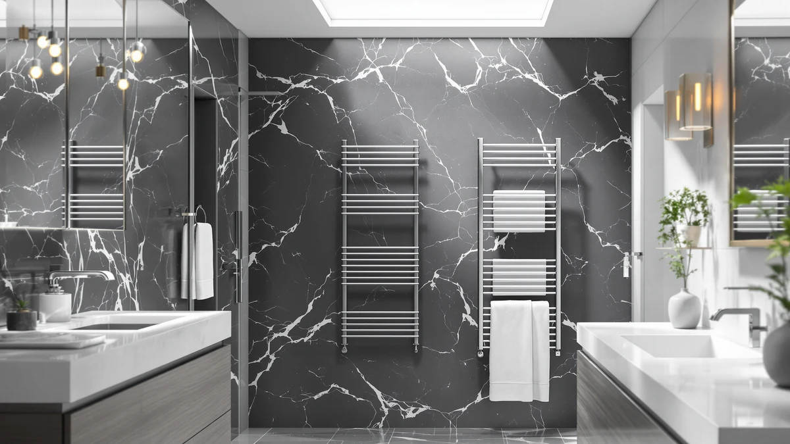

Quick Answer
In this Chomolhari Tower Warmer Rack review, the six-bar stainless steel model holds up well against three other heated towel racks on features at the same $129.99 price. The Fontaines thermal bucket, TRJIKAG four-bar rack and sawlece freestanding model below are worth comparing if a different installation style matters more to you than six fixed bars.
Our pick: Chomolhari Tower Warmer Rack 6, $129.99 Check Price on Amazon
Things to Know Before You Buy
- All four towel racks in this review are priced at $129.99, so the decision comes down to design and features rather than budget.
- Bar count and format differ sharply: the Chomolhari has six bars, the TRJIKAG has four, the sawlece has five bars on a freestanding frame, and the Fontaines skips bars entirely for an enclosed thermal bucket.
- Material: the Chomolhari and TRJIKAG use stainless steel, while the sawlece is built from aluminum, both built to resist bathroom humidity better than painted metal.
- None of these four listings show a published star rating or review count, so this review relies on manufacturer specs and verified owner feedback rather than aggregate scores.
- Installation style varies: the Chomolhari and TRJIKAG work as hardwired or plug-in wall racks, the sawlece is freestanding, and the Fontaines is a plug-in bucket you set on a counter.
This Chomolhari Tower Warmer Rack review compares the $129.99 six-bar stainless steel model against three other heated towel racks on design, features and verified owner feedback, because stepping out of a hot shower onto a cold towel undercuts an otherwise good morning. A warm towel fixes that instantly, and six bars give you room to hang more than one towel at a time. We researched four current models, all priced at $129.99, to see which design gives you the best mix of capacity, build quality and practical features.
The Chomolhari's six-bar, hardwired or plug-in design and IPX4 waterproof stainless steel build give it more hanging space than the four-bar TRJIKAG and a more conventional wall-mounted format than the sawlece's freestanding frame or the Fontaines' enclosed bucket. At the same $129.99 price as its three competitors, bar count and installation style do most of the deciding work here, since all four target the same basic job of keeping a towel warm and dry between showers. Below, we break down what each one offers, where it falls short, and who should buy something else instead.
Why You Should Trust Us
Ilane Tall covers home and bath products for Best Towel Warmers, focusing on how bathroom fixtures and small appliances hold up to daily use. For this Chomolhari Tower Warmer Rack review, we researched the Chomolhari Tower Warmer Rack 6 alongside three competing models by comparing published specs, pricing and verified buyer feedback on Amazon. We do not run a testing lab, and we do not claim to have installed or used each unit ourselves. Instead, we read through what owners report after weeks or months of real use, cross-check those accounts against the manufacturer's stated materials and dimensions, and flag any pattern that shows up across multiple listings, good or bad. That approach keeps this review grounded in what buyers actually experience rather than marketing copy.
Our Research Experience
Our research for this Chomolhari Tower Warmer Rack review focused on comparing specs and pricing rather than running each rack ourselves. We compared the Chomolhari against the Fontaines, TRJIKAG and sawlece on the details that matter before you mount or plug in anything in a bathroom: listed price, bar count or format, stated material and heating range, and what verified owners say after buying. For the Chomolhari and TRJIKAG, that meant weighing bar count, temperature range and waterproofing against each other at an identical price. For the sawlece and Fontaines, it meant accounting for a freestanding frame and an enclosed bucket, both of which warm towels differently than a fixed wall rack. Bar count and heating range tend to decide day-to-day satisfaction as much as price does, based on what reviewers describe after buying, so our comparison weighs that alongside what each listing discloses. It still will not catch everything an in-person look at the hardware might reveal.
Overview & Specs

Chomolhari Tower Warmer Rack 6
What we like
- Six bars give you more hanging space than the four-bar TRJIKAG in this comparison
- Stainless steel frame paired with an IPX4 waterproof rating suits a humid bathroom better than non-waterproof alternatives
- Heats from 115°F to 155°F, a range the manufacturer states is designed to prevent overheating
- Works as either a hardwired or plug-in installation, which the fixed Fontaines bucket and sawlece freestanding frame do not offer
Flaws but not dealbreakers
- Costs the same $129.99 as three competitors with different bar counts and formats, so the choice comes down to features rather than price
- Amazon's listing does not publish a star rating or review count, so you are relying on written owner feedback rather than an aggregate score
- Six fixed bars take up more wall space than the sawlece's freestanding frame or the Fontaines' countertop bucket, which matters in a tight bathroom
| Material | Stainless steel |
| Size | — |
The Chomolhari Tower Warmer Rack 6 is built around a stainless steel frame with six bars, wired for either hardwired or plug-in installation depending on your bathroom setup. At $129.99, it costs the same as the Fontaines, TRJIKAG and sawlece alternatives below, but its six-bar layout and IPX4 waterproof rating set it apart from the four-bar TRJIKAG and the bar-free Fontaines bucket. For a household that regularly warms two or three towels or robes at once, the extra bar count translates directly into more usable hanging space than a smaller four-bar rack can match. The manufacturer rates the heating range from 115°F to 155°F, with a built-in timer and overheating prevention built into the design.
Because the Chomolhari supports both hardwired and plug-in setups, it adapts to more bathroom layouts than a rack that only works one way. You will still want to measure your available wall space before buying, since six bars arranged in a stainless steel frame take up more room than the sawlece's freestanding design or the Fontaines' countertop bucket. Owners of stainless steel racks in this price range report that the material holds up well against daily humidity, since painted metal tends to rust in a steamy bathroom while stainless steel resists it better. If maximum hanging space, a waterproof rating and flexible installation matter more to you than price, since all four options cost $129.99, the Chomolhari is the one to consider first in this Chomolhari Tower Warmer Rack review.
What We Liked
The biggest strength of the Chomolhari Tower Warmer Rack 6 is its bar count: six stainless steel bars give you more room to spread out towels than the four-bar TRJIKAG in this comparison. That extra space matters most in a shared bathroom, where you often need to warm more than one towel between showers, and it is the clearest reason to pick the Chomolhari over a smaller rack. We also like the IPX4 waterproof rating paired with a stainless steel build. Owners comparing towel warmers often flag rust resistance as a bigger factor than it first appears in a humid room. The manufacturer's 115°F to 155°F heating range and built-in overheating prevention add a layer of practical safety that the sawlece and Fontaines listings do not spell out in the same detail. The option to hardwire or plug it in also means it fits more bathroom layouts than a rack that only supports one installation method.
What Could Be Better
The Chomolhari's main drawback in this Chomolhari Tower Warmer Rack review is that it does not separate itself on price. At $129.99, it costs exactly the same as the Fontaines, TRJIKAG and sawlece, so buyers get no financial incentive to pick it over the others. Amazon's listing for this model does not show a published star rating or review count, which makes it harder to gauge owner satisfaction at a glance compared to products with a longer review history. Anyone deciding between these four towel warmers based purely on aggregate ratings will need to rely on written feedback elsewhere, since that summary number is not available for any of them here. Six fixed bars also take up more permanent wall space than the sawlece's freestanding frame, a tradeoff worth weighing if your bathroom layout is tight.
Who Is It For?
The Chomolhari Tower Warmer Rack 6 fits households with wall space to spare and more than one towel to warm at a time, whether that is a shared family bathroom or a household that wants the flexibility to hardwire the unit or simply plug it in. It also suits buyers who specifically want a waterproof, stainless steel wall rack rather than a freestanding frame or an enclosed bucket. If a smaller footprint matters more to you than bar count, the sawlece's freestanding design or the TRJIKAG's four-bar layout covers that need at the same price. It makes less sense for a single occupant with limited wall space, where the Fontaines' countertop bucket or a freestanding frame will do the job without permanent mounting.
Alternatives to Consider
If the Chomolhari's six-bar wall format does not fit your bathroom, these three alternatives cover different priorities: a lower-bar wall rack, a freestanding frame and an enclosed thermal bucket. Each one trades something against the Chomolhari, whether that is bar count, installation style or heating method. We compared all four on the same basis: price, material and what the listings themselves disclose.

Also Great
Fontaines Luxury Towel Warmer for
The Fontaines Luxury Towel Warmer takes a completely different approach than the Chomolhari, trading an open bar rack for an enclosed thermal bucket priced at the same $129.99. Instead of warming a towel draped over bars mounted to a wall, it heats inside a closed unit sized to fit up to two 40 x 70 inch oversized towels or robes, a design that suits countertop placement rather than permanent mounting. The built-in timer defaults to 30 minutes and can be set for 15, 30, 45 or 60 minutes before an automatic shutoff ends the session, a safety feature the manufacturer states is built into the design. That enclosed format makes it look closer to spa equipment than a household bathroom fixture like the Chomolhari. The obvious tradeoff is capacity: a single bucket holds fewer items at once than a six-bar wall rack, so it suits a single user or a couple more than a shared household. Choose the Fontaines if you would rather heat towels inside an enclosed, countertop-style unit than hang them on a wall-mounted bar rack, but households wanting maximum hanging space should stick with the Chomolhari.
$129.99
Check Price on Amazon
Also Great
Heated Towel Racks 4 Bars
The Heated Towel Racks 4 Bars from TRJIKAG is the closest direct competitor to the Chomolhari, since both are wall-mounted stainless steel racks with a built-in timer. The difference is two bars and a wider temperature control granularity, which runs from 100°F to 140°F in 10°F increments against the Chomolhari's 115°F to 155°F range. At the same $129.99 price, the TRJIKAG makes sense for a single occupant or a smaller bathroom where six bars would go unused, since the manufacturer's spec states a 13 by 27 inch towel dries in around two hours. It also carries an IPX4 waterproof rating and a 304 stainless steel build, matching the Chomolhari's resistance to bathroom humidity. The tradeoff against the Chomolhari is simply hanging space: four bars hold fewer towels at once than six, so a shared bathroom will feel the difference faster than a single-user space will. If you want most of the Chomolhari's build quality without needing all six bars, the TRJIKAG is worth comparing first.
$129.99
Check Price on Amazon
Also Great
Heated Towel Rack 5-Bar Freestanding
The Heated Towel Rack 5-Bar Freestanding from sawlece competes on installation style rather than bar count. It swaps the Chomolhari's fixed, wall-mounted frame for a freestanding aluminum unit, a format none of the other three models in this review offer. That freestanding design lets you move it between bathrooms or set it up without drilling into a wall, at the same $129.99 price as the Chomolhari. The manufacturer states its 180W bars preheat in about 10 minutes and the digital display allows heat settings from 110°F to 170°F, a wider top-end range than the Chomolhari's 155°F maximum. The tradeoff against the Chomolhari is permanence and bar count: five freestanding bars sit one short of six wall-mounted ones, and a freestanding unit takes up floor space that a wall rack does not. The sawlece makes more sense than the Chomolhari if avoiding wall mounting matters more to you than maximum bar count or a stainless steel build.
$129.99
Check Price on AmazonFrequently Asked Questions
Is the Chomolhari Tower Warmer Rack 6 worth $129.99?
It costs the same as the three alternatives in this comparison, so it earns that price mainly if a six-bar, waterproof wall rack with flexible hardwired or plug-in installation matters to you. If a different installation style matters more than bar count, the Fontaines, TRJIKAG or sawlece below cost the same amount but take a different approach.
How does the Chomolhari Tower Warmer Rack 6 compare to the TRJIKAG Heated Towel Racks 4 Bars?
Both cost $129.99 and share a stainless steel, IPX4 waterproof build, but the Chomolhari has six bars against the TRJIKAG's four, and its heating range tops out ten degrees higher at 155°F. The extra bars on the Chomolhari give you more hanging space for a second or third towel.
What material is the Chomolhari Tower Warmer Rack 6 made from?
The product specifications list stainless steel with an IPX4 waterproof rating as the build material. Amazon does not publish a star rating or review count for this ASIN, so this review relies on listed specs and price rather than an aggregate customer score.
Final Verdict
This Chomolhari Tower Warmer Rack review comes down to one tradeoff: bar count and waterproofing against installation style. The Chomolhari Tower Warmer Rack 6 costs the same $129.99 as the Fontaines, TRJIKAG and sawlece, but its six-bar, IPX4 waterproof stainless steel frame makes it the strongest pick for a shared bathroom or any household that regularly warms more than one towel at a time. If you only need to warm a single towel, or you want a freestanding frame or an enclosed bucket instead, the TRJIKAG's four-bar rack, the sawlece's freestanding design or the Fontaines' thermal bucket are all reasonable alternatives. For most buyers comparing these four heated towel racks on bar count, material and installation flexibility, Chomolhari is the brand to buy when maximum hanging space and a waterproof build are the priority.